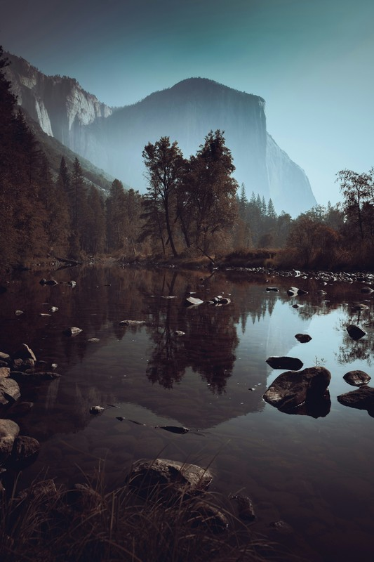
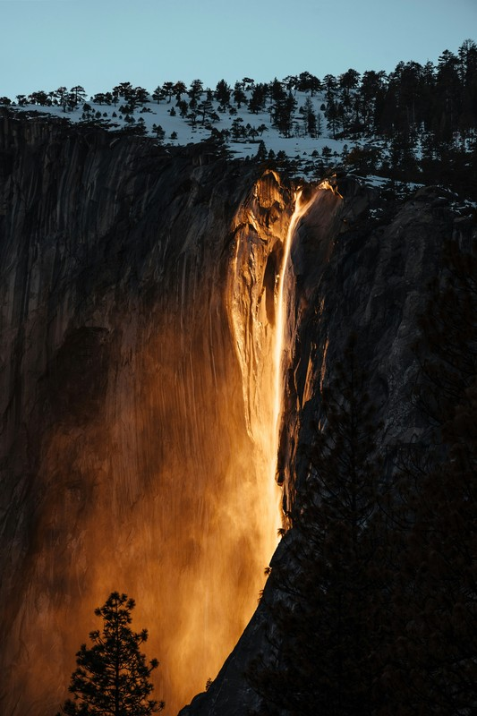

Riverside California
Yosemite Growing up, some of my favorite memories were made in Yosemite National Park. Whether it was hiking through the valley, staring up at El Capitan, or watching the waterfalls thunder down the granite cliffs, Yosemite always felt like another world. It's the kind of place that makes you feel small in the best possible way.

